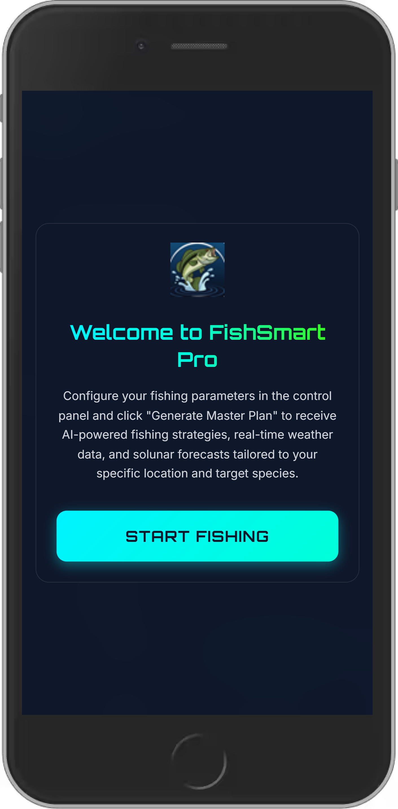
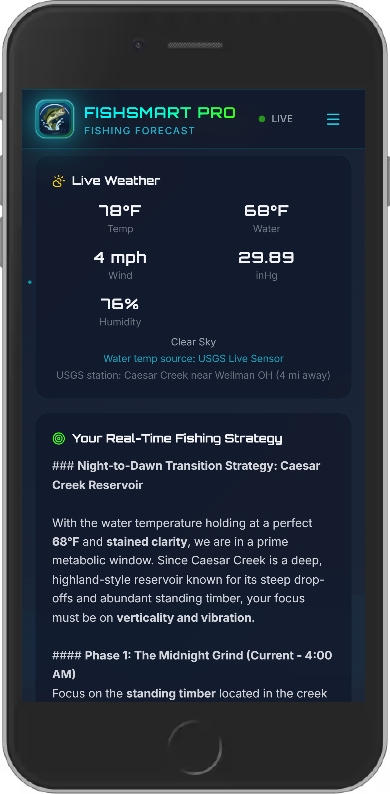
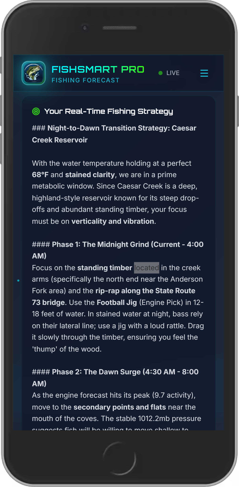
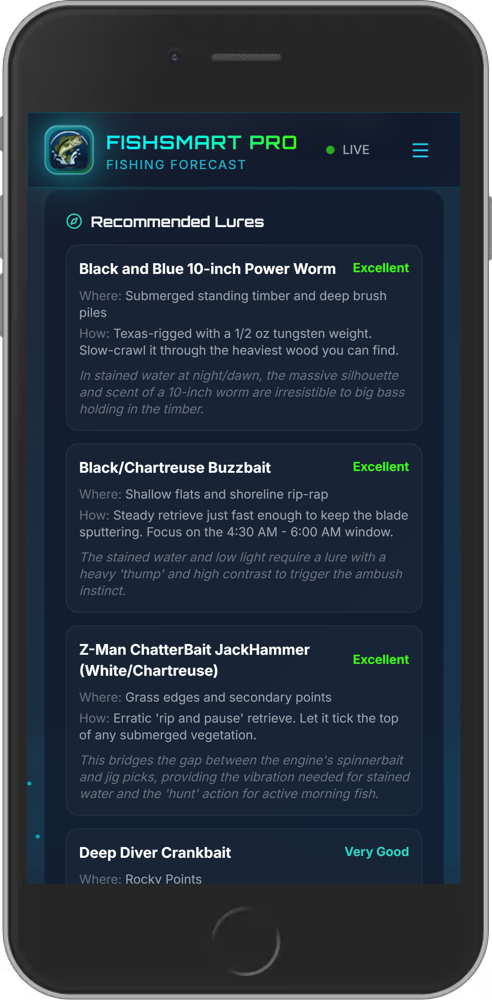
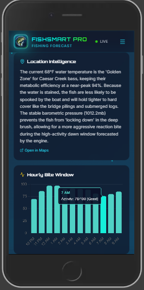

FishSmart Pro turns live weather, barometric pressure, water clarity, species biology, and real USGS water temperature into a transparent bite score, 12-hour activity forecast, and AI-enhanced lure plan. No social feed. No spot burning. Just a smarter trip before you leave the house.

A weather forecast does not tell you what fish are doing. A magic bite number does not teach you anything. And social fishing apps can expose the exact places you worked hard to find.
If you only get a few chances to fish each month, choosing the wrong window costs gas, time, bait, and confidence.
“Good,” “fair,” or “moderate” is not a strategy. You need to know which conditions are helping, hurting, and changing through the day.
FishSmart Pro has no catch feed, no follower graph, no crowdsourced hot spots, and no public brag board. Your places stay yours.
The new FishSmart Pro flow shows the entire decision path: set your conditions, review the score, find the peak window, then pick a lure with reasoning.
Set location, species, water body, clarity, boat mode, and manual water temperature when needed
See the bite score, best fishing window, and condition summary in one place

Plan around the 12-hour activity forecast instead of guessing at the ramp

Get lure recommendations with match scores, presentation notes, and source transparency

Understand which factors are pushing the bite up or down

Review saved forecasts and export your own data as JSON or CSV on Pro
Enter where you are fishing, the species you want, water clarity, water body type, and whether you are fishing from boat or bank.
The deterministic engine checks 10+ environmental and biological factors before AI writes a single word.
Gemini translates the structured output into plain-language strategy, lure picks, presentation tips, and a trip plan you can actually use.
Every screen is designed to answer a practical question: should I go, when should I fish, what should I throw, and why?
A 0–100 score backed by visible factors, not a black-box label. See what is helping and what is holding the bite back.
Hourly activity projections show the best window before you burn the morning, afternoon, or evening on dead water.
Use real monitoring station data where available, with station details for transparency. No blind air-temperature guesses.
Get ranked lures with match scores, reasoning, and source badges so you know whether a pick came from the engine or AI.
Bass, walleye, trout, pike, crappie, catfish, panfish, and more — each modeled with species-specific behavior.
Pro saves up to 50 forecasts per device and lets you export JSON or CSV so your fishing notes stay portable.
No public catches, no social feed, no crowdsourced pressure. FishSmart Pro helps you plan without broadcasting your water.
Open it on the web, install it as a PWA, or use the Android app. Your forecast tool goes wherever your rod goes.
FishSmart Pro does not ask an LLM to invent a fishing forecast. The engine calculates the forecast first; AI explains the result in human language.
Weather, pressure trend, water clarity, location, water body, time of day, species, and USGS water temperature where available.
Biological and environmental models evaluate metabolism, temperature, dissolved oxygen, spawning phase, wind, cloud cover, lunar phase, and more.
Gemini turns the structured forecast into plain-English reasoning, lure recommendations, and tactical next steps.
Falling, rising, or stable pressure changes feeding behavior differently by species.
Fish metabolism changes with actual water temperature, not just the air temperature on your weather app.
The app compares current conditions against the species' preferred biological range.
Wind can improve cover and mixing, but too much wind can suppress activity or make fishing impractical.
Cloud cover can extend low-light feeding windows and change lure visibility.
Clear, stained, and muddy water call for different colors, vibration, speed, and presentation styles.
Civil dawn and dusk windows matter because fish often feed hardest in low-light transitions.
Water temperature drives fish behavior, but many apps estimate it from air temperature. FishSmart Pro uses nearby USGS monitoring stations where available and shows source details so you know what the forecast is built on.
| What Anglers Need | FishSmart Pro | Fishbrain | Navionics | Weather Apps |
|---|---|---|---|---|
| Explains why fish may bite | ✓ Factor-by-factor reasoning | ✗ Social-first | ✗ Chart-first | ✗ |
| Freshwater bite score | ✓ Species-specific engine | Limited / black box | ✗ | ✗ |
| Best time window | ✓ 12-hour activity forecast | Limited | ✗ | ✗ |
| Live water temperature | ✓ USGS station data | ✗ | ✗ | ✗ |
| Lure recommendations | ✓ AI + engine with match scores | Generic | ✗ | ✗ |
| Spot privacy | ✓ No social feed | ✗ Built around sharing | ✓ | ✓ |
| Price | $29.99/yr | ~$60/yr | $49.99+/yr | Free, but no forecast |
| Free trial value | ✓ 3 full AI forecasts/session | Limited | Trial only | N/A |
Start with 3 full AI forecast uses. Upgrade only when you want unlimited forecasts, saved history, and export.
Open FishSmart Pro, run a full forecast, and plan your next freshwater trip with science, AI, and your spots kept private.